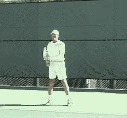
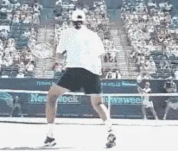
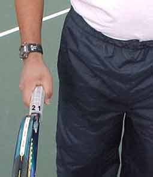
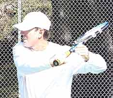
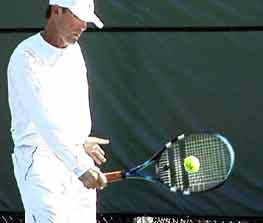
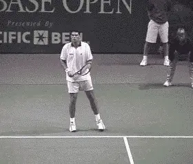

The Slice or Underspin Backhand¶
The Slice or Underspin Backhand¶
Scott Murphy¶

Here I demonstrate the basics of the multi-purpose slice backhand - you can't be a successful competitor without it.
Despite the great emphasis today on the topspin power game, the fact remains having a slice backhand is an absolute must, whether you hit your backhand with one hand or two.
The use of underspin is multi-faceted: for groundstrokes, return of serve, approach shots, half volleys, and volleys. Patrick Rafter is an example of a player who may use all of these possibilities in a single point. Andre Agassi may hit two-handers for 90 percent of a match, but suddenly call on the slice backhand in a given situation. Then there's the great Steffi Graf who hit virtually all of her backhands with underspin.
You can't be a complete player or a successful competitor without it. In match play you need slice in a wide variety of situations: to neutralize a heavy topspin shot, to mix up the pace of a rally, to keep the ball low, to buy time on defense, and play balls that are low, high, wide, or short. (It's worthwhile mentioning that some tennis pundits prefer to call slice, "underspin" because in the literal sense a sliced ball curves. However, I think for most people the shots are considered one in the same and in this article I'll use the terms interchangeably).

Rafter's beautiful compact backhand slice - ideal for returns, baseline rallies, and approach shots.Initial Difficulty
Although developing this shot is critical, it has been my experience over the years that the vast majority of players find the slice backhand to be difficult initially and have to be encouraged to stick with the shot, practicing its essential elements repeatedly until they become more familiar.
Before covering those elements, I'd like to dispel a couple of common misconceptions about this shot. First, a good slice backhand is neither "chopped" nor "scooped." Trying to use these motions can put the ball in the bottom of the net or cause it to pop up and float.
The best slice backhands are actually drives that can be hit with varying degrees of underspin, and we'll present the proper swing trajectory to allow you to do this.
Grip¶
The Continental grip is almost universally considered the best grip to hit slice. This is because the continental allows the player to open the racquet face more naturally.

The continental is the most widely used and effective grip for the slice backhand.
With some students, learning the continental can become a real bone of contention, usually because they are not using it effectively in other aspects of their game, such as the serve or the volleys. Trying to learn the slice, players have a tendency to quickly switch back to their old backhand grips. For a one-hander, this is the full eastern backhand. For a two-hander, it's usually a right-handed forehand grip.
While it is possible to hit a version of the slice with a full (or strong) backhand grip, players who don't shift to the continental ultimately work a lot harder to do so. This is because, with the stronger grip, it's much harder to get the leading edge of the racquet on the outside of the ball. The result, typically, is a ball with too much sidespin that is also much harder to direct, and sacrifices pace. At the other extreme, trying to slice with a forehand grip will cause the ball to float, as well as create possible stress on the wrist.
Granted, if you haven't used it before, the first attempts with a Continental grip can be very disorienting. But with a real understanding of what makes it work and lots of repetition, this shot will eventually become very comfortable. In fact, many experienced players think it's the most natural and flowing stroke in the game.
Preparation Phase¶
As with all other shots, start by making sure you use your eyes effectively. The earlier you see the ball off your opponent's racquet the sooner you'll be able to determine if your reply needs to be hit with slice, and the more quickly you'll be able to get into position to hit it.

Mark Philippoussis demonstrates a perfect turn for the slice backhand. Note the step with the left foot and the full coil.
Make a ready hop just before your opponent hits the ball and when you see the ball moving toward your backhand, step to the side with the foot nearest the ball and begin to rotate your hips and shoulders. Create a full coil by keeping your head and shoulders level and connecting the hitting shoulder with your chin. Be sure to keep your eyes on the incoming ball.
On the backswing, your hitting arm should bend to about a 45-degree angle. If you bend your arm much more than that you risk a late hit or a choppy swing. The racquet head should be just a little above the plane of the incoming ball, higher or lower depending on the actual height of the particular shot.
To facilitate the change of grip and provide support, your non-racquet hand should be on the throat of the racquet during the entire backswing.
At the completion of the backswing, the wrist should be set at a 45-degree angle relative to the forearm. The racquet face is now open with the edges of the racquet more or less even.
This is very important. The inside edge of the racquet is the one closest to the ear. The outside or "leading edge" is the one that moves toward the ball first. If the outside edge is much lower than the inside edge at completion of the backswing (as in the topspin backhand), this indicates that the backhand grip is too strong or the wrist position is poor.
Completion Phase¶
¶

Video demonstration — the original video for this article was hosted on TennisPlayer.net.
Your hitting arm should bend at about 45 degrees on the turn. The racket face is open, the edges close to even.Just prior to the forward swing, plant your back foot (the left foot for right-handers) and transfer your weight onto the front foot as straight-ahead as possible.Be sure to bend your knees (except for very high balls), but stay as erect as possible from the waist up.Dipping the lead shoulder is a common source of errors when hitting with underspin.Avoid hitting from an open stance. Ideally you want to step into the shot, but if you're forced to step more across your body that's usually ok.This is because you can still hit the slice well with a somewhat later contact point than on the other groundstrokes.With this later contact point, you're able to carry the ball longer because it allows for maximum extension of the arm into the shot.Hitting a slice backhand too early can actually result in a weak, "floaty" shot or a ball that lands in the net.

While contact is still at the front edge of the body, the slice can be hit with a somewhat later contact point than other groundstrokes.
There are those who advocate a severe "high to low" forward swing. This can definitely produce slice, but tends to cause the ball to float and lose pace. It may also give you the wrong idea about the finish. If you study the animations of Rafter or Philippoussis, you see that although the racquet moves downward after the hit, it still finishes high with the hand position close to the same height as a topspin drive.
For these reasons, I prefer the racquet head start only slightly above where you'll actually contact the ball. This makes for a simpler swing that allows you to generate plenty of spin, but still "drive" the ball.
As you bring the racquet forward maintain a firm wrist. You arm should straighten out prior to contact, and stay that way all the way through the finish.
 The finish position on the slice. Too much emphasis on hitting high to low can cause the ball to float.Note how Rafter keeps his shoulders almost square to the net with his non-hitting arm moving in the opposite direction from the hit.
The finish position on the slice. Too much emphasis on hitting high to low can cause the ball to float.Note how Rafter keeps his shoulders almost square to the net with his non-hitting arm moving in the opposite direction from the hit.
High speed video shows that at contact the racquet head will actually be square to the court. But trying to consciously create this position leads to real trouble. Don't use the wrist to adjust the racquet face. Visualize the face as slightly open at contact and allow the forearm to roll through the shot naturally and make the adjustment. The racquet face will naturally reopen and stay that way to the finish.
Aim for the outside of the ball. The image of hitting across the ball helps solidify ball contact. The follow through should be outward toward the top of the net and upward toward the target.
During the swing the player should strive to keep the shoulders sideways to the net position, and minimize the torso rotation. To ensure this, at the instant you begin the forward swing send the non-hitting arm in the opposite direction.

Philippoussis hitting through a backhand slice return - a must for a well-rounded game at all levels.Distance to the Ball¶
Finding the ideal distance between your body and the ball takes experience. If you're too close, you'll wind up leading the swing with your elbow, in which case the racquet face will be late and too open. If you're too far away your arm will be overe-xtended and you won't be able to get any bite on the ball. For high-bouncing balls however, you do want to keep your body somewhat further away, and let your front leg straighten during the hit.
That covers the basic mechanics of generating slice, something you can apply to many situations, some of which we'll be discussing in further lessons. No matter what style you play, it will make your game more flexible and well-rounded.

Scott Murphy is from Marin County, California where he started playing tennis at age 5 in a family of tennis nuts. Both of his parents were major influences in his development. He also took lessons from Marin legend Hal Wagner and former top 10, Harry Roach. Scott is a graduate of the University of California at Berkeley where he played baseball and football but continued to work on his tennis game with renowned coach Chet Murphy. He was the head pro at San Domenico/Sleepy Hollow Tennis Club for over 20 years. He also directed the Nike Tahoe Tennis Camp at the Granlibakken Resort for 10 years. Scott now teaches privately in Ross, Marin County and in the summer he directs the Tuscan Tennis Academy which he founded in Quarrata, Italy.
Check out Scott's website at scottmurphytennis.net
You can contact Scott directly at: scottmrph@yahoo.com